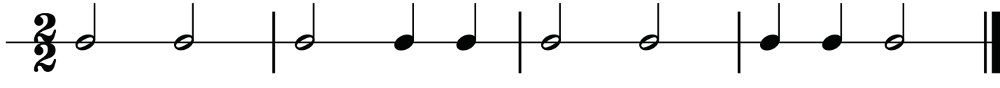
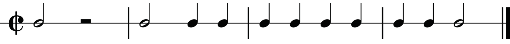
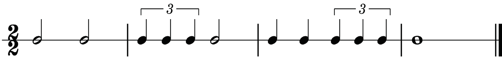
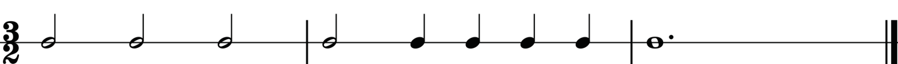

One two
One two - and
One two
One - and two
Ta ta
Ta ta - te
Ta ta
Ta - te ta
Clap clap
Clap clap
Clap clap
Clap clap

One (two)
One two - and
One - and two - and
One - and two
Ta (ta)
Ta ta - te
Ta - te ta - te
Ta - te ta
Clap
Clap clap
Clap clap
Clap clap

One two
One-trip-let two
One - and two-trip-let
One (two)
Ta ta
Ta - ke - ti ta
Ta - te ta - ke - ti
Ta - a
Clap clap
Clap clap
Clap clap
Clap
3/2 time signature
There are three minim beats in each bar when counting a rhythm in three-two time. Keep in mind that the value of a beat is a minim as well. Therefore, you will count from one to three in each bar. The examples in figures 1.23, 1.24 and 1.25 show how to count aloud rhythms in three-two time while clapping the main beats.

One two three
One two - and three - and
One - (two) - (three)
Ta ta ta
Ta ta - te ta - te
Ta - a - a
Clap clap clap
Clap clap clap
Clap